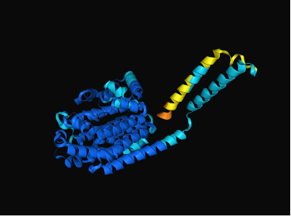

AlphaFold
Last updated: 2025-07-02
Checks: 2 0
Knit directory: song-lab/
This reproducible R Markdown analysis was created with workflowr (version 1.7.1). The Checks tab describes the reproducibility checks that were applied when the results were created. The Past versions tab lists the development history.
Great! Since the R Markdown file has been committed to the Git repository, you know the exact version of the code that produced these results.
Great! You are using Git for version control. Tracking code development and connecting the code version to the results is critical for reproducibility.
The results in this page were generated with repository version bf7765b. See the Past versions tab to see a history of the changes made to the R Markdown and HTML files.
Note that you need to be careful to ensure that all relevant files for
the analysis have been committed to Git prior to generating the results
(you can use wflow_publish or
wflow_git_commit). workflowr only checks the R Markdown
file, but you know if there are other scripts or data files that it
depends on. Below is the status of the Git repository when the results
were generated:
Ignored files:
Ignored: .DS_Store
Ignored: .RData
Ignored: .Rhistory
Ignored: analysis/.DS_Store
Unstaged changes:
Modified: analysis/Publish all files
Modified: analysis/_site.yml
Note that any generated files, e.g. HTML, png, CSS, etc., are not included in this status report because it is ok for generated content to have uncommitted changes.
These are the previous versions of the repository in which changes were
made to the R Markdown (analysis/alphafold.Rmd) and HTML
(docs/alphafold.html) files. If you’ve configured a remote
Git repository (see ?wflow_git_remote), click on the
hyperlinks in the table below to view the files as they were in that
past version.
| File | Version | Author | Date | Message |
|---|---|---|---|---|
| html | 7a56157 | ecbaker7-tamu | 2025-05-29 | Build site. |
| html | fecf696 | ecbaker7-tamu | 2025-05-20 | Build site. |
| html | 9ed2835 | ecbaker7-tamu | 2025-05-20 | Build site. |
| html | 05539da | ecbaker7-tamu | 2025-05-20 | Build site. |
| Rmd | 638b4d2 | ecbaker7-tamu | 2025-05-20 | wflow_publish(c("analysis/alphafold.Rmd", "analysis/Apollo.Rmd", |
| html | ad2ac06 | ecbaker7-tamu | 2025-04-15 | Build site. |
| Rmd | a302b28 | ecbaker7-tamu | 2025-04-15 | wflow_publish(c("analysis/alphafold.Rmd", "analysis/Apollo.Rmd", |
| html | 729de96 | ecbaker7-tamu | 2025-04-11 | Build site. |
| Rmd | b2b35b2 | ecbaker7-tamu | 2025-04-11 | wflow_publish(c("analysis/alphafold.Rmd", "analysis/Apollo.Rmd", |
In-silico Protein Structure Prediction
What is AlphaFold?
AlphaFold is a software created by Google DeepMind that predicts protein structure based solely off of the primary structure of the protein (amino acid sequence). Additionally, you may predict multi-mer structures and proteins with the addition of certain ligands available in the AlphaFold data set.
Currently, the third release of the program, aptly named AlphaFold3, is the latest edition. You may view the paper, published in the journal Nature, here.
Limitations
As of April 2025, the daily limit for the number of jobs per account is 30. If you require a higher threshhold of jobs, you will have to obtain a contract with DeepMind for this level of access. However, 30 jobs is plenty for a large portion of researchers.
One of AlphaFold’s biggest limitations is the software’s unreliability in predicting highly dynamic regions of a protein. Commonly, when you put in a protein with large areas of dynamic activity, AlphaFold will tend to force the structure into an alpha-helix shape. I tend to see it in my analysis when trying to model a protein with some sort of anchoring mechanism, as these regions are inherently dynamic.
This is of less concern when not working with proteins with majority highly dynamic structures, but it is certainly a property to be aware of.
How to Use
The main function of AlphaFold is the prediction of protein structures. To perform this prediction, simply visit the website alphafoldserver.com and copy-paste your protein’s sequence into the interface provided. Below is an image of this interface when you first enter the website:Above the space where you enter your protein sequence, you will see 2 boxes offering specifications of your AlphaFold run.
The topmost box is labeled “Entity type”. This allows you to select from 5 options: Protein, DNA, RNA, Ligand, or Ion. Select whichever best describes the structure you’re trying to predict.
The middle box is labeled “Copies”. This allows you to produce multiple copies of your entity for the generation of structures such as dimers and multimers.
You may also add multiple proteins to one run by adding multiple sequences using the “Add entity” option below your previously-entered sequence.
Once you’ve specified all necessary steps for your run, you will hit either “Save job” if you would like to run it at a later date, or “Continue and preview job” if you are ready to run the job. Once you select continue and preview, a pop-up will appear:You should change your job name to something meaningful, as AlphaFold will automatically name it using the date and time of the run submission. Additionally, since AlphaFold is a predictive model, it may generate differing results between runs. If you wish to be able to reproduce identical results to your run, add a seed to your run. This will allow this run to be replicable. Once you’re ready, hit “Confirm and submit job.”
This run will produce 2 figures: a 3-D prediction color-coded by pIDTT scores and a pAE graph. Interpretation of these 2 graphs are discussed under the Analysis of Predictions tab of this page.
Downloading Results
By hitting the download button above your AlphaFold run, your browser will download a .zip file. this file contains 5 .json files for data, 5 .cif files, 5 .json files for summary of confidences, a .json for the job request, and one file for the terms of use. For each run, AlphaFold generates 5 predictions that show 5 different configurations of your protein. Additionally, the labeling of the models follows zero-based indexing, so the first model is labeled YourRunName_model_0.
Analysis of Predictions
pLDDT
The main figure that AlphaFold produces is a generated image of the predicted structure, along with color-coordinated scores of confidence called predicted local distance difference test (pLDDT) scores. Dark blue indicated a very high pLDDT score, light blue a moderately high score, yellow is low, and orange is extremely low.
The pLDDT score gives an estimate of how well AlphaFold’s predicted strutcure would agree with an experimentally-derived structure. In the example below, you can see region of high certainty within the center of the protein, but lower certainty along the alpha-heix that is along the back part of the loop extended out from the main structure.


pAE Plots
The predicted aligned error (pAE) plots produced by AlphaFold indicate the model’s confidence that of the relative position of 2 residues within the structure. Along the x- and y-axes we have the nucleotide bases of the protein from start to end. The intersection of 2 points indicates AlphaFold’s certainty of those 2 regions positions relative to each other.
This plot is important because there are many groups extending off of the main structure of the protein, and these groups can interact and cause the protein to change shape.Commonly, regions that are further from each other have lower scores of certainty, and regions that are close together score highly. Notice the dark line going from the top left corner of the graph to the bottom right. This is the relative position of each bases’ position relative to itself (which is always certain), so this dark green line will always be in the pAE plot.